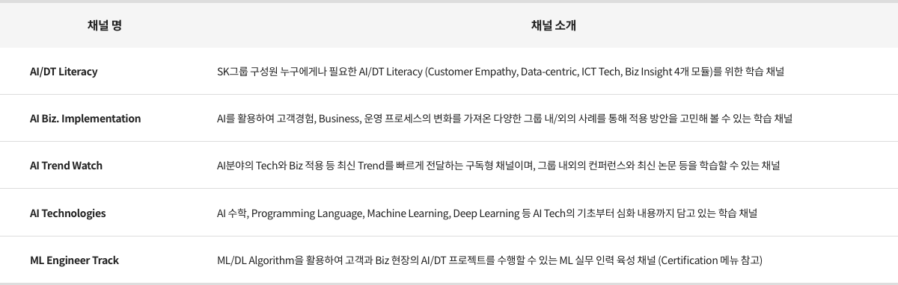

AI College
AI 아싸(Outsider)에서 AI 핵인싸(Insider)로!
AI College는 SK 구성원 누구나 알아야 할 기본 지식을 바탕으로,
각 산업과 직무에서 AI를 활용하는 실무역량을 배양하고 AI기술 전문가로
성장할 수 있는 기회를 제공합니다.
각 산업과 직무에서 AI를 활용하는 실무역량을 배양하고 AI기술 전문가로
성장할 수 있는 기회를 제공합니다.

이제 AI는 우리가 인지하지 못할 정도로 Seamless하게 일상 속에 자리잡고 있듯이, 우리 SK가 추구하는 Deep Change 또한 모든 비즈니스 영역에서 AI가 접목된 변화를 필요로 하고 있습니다.
AI College에서는 이러한 AI 기반의 Deep Change 실행 역량과 Align된 Learning Experience를 제공하고 있습니다.
비즈니스 현장의 기술 인력들에게 요구되는 다양한 전문 AI 기술 습득은 물론, SK 구성원이라면 누구나 알아야 할 기본적인 AI 지식에 이르기까지
일상의 업무에 폭넓게 AI를 활용할 수 있는 역량을 갖출 수 있도록 지원하고 있습니다.
Literacy에 해당하는 기본 과정을 시작으로 본인이 성장하고자 하는 Role과 직무에 맞는 Specialty 과정이 체계적으로 제공되고 있어, 머신러닝, 딥러닝 등과 같은 AI 핵심 기술을 학습하고 이를 적용한 다양한 Biz Case를 통해 AI가 가져올 새로운 기회를 구체적으로 그려볼 수 있을 것입니다.

AI College에서는 이러한 AI 기반의 Deep Change 실행 역량과 Align된 Learning Experience를 제공하고 있습니다.
비즈니스 현장의 기술 인력들에게 요구되는 다양한 전문 AI 기술 습득은 물론, SK 구성원이라면 누구나 알아야 할 기본적인 AI 지식에 이르기까지
일상의 업무에 폭넓게 AI를 활용할 수 있는 역량을 갖출 수 있도록 지원하고 있습니다.
Literacy에 해당하는 기본 과정을 시작으로 본인이 성장하고자 하는 Role과 직무에 맞는 Specialty 과정이 체계적으로 제공되고 있어, 머신러닝, 딥러닝 등과 같은 AI 핵심 기술을 학습하고 이를 적용한 다양한 Biz Case를 통해 AI가 가져올 새로운 기회를 구체적으로 그려볼 수 있을 것입니다.
전체 커리큘럼
Self-directive
Intensive
AI Technologies
- 딥러닝
- Meta Learner
- TensorFlow/Pytorch 프레임워크
- 머신러닝
- AI 기초 개념 및 동작원리
- AI 수학 기초
AI Trend Watch
- AI 최신 기술
- AI Biz/Tech Conference
- ai.x Conference
- ICT Tech Summit
AI Biz. Implementation
- AI Biz Case Study
- SK AI적용 Practice
- AI To Biz Methodology
Badge
ML Engineer Track
(Intensive Course, 9주)
- Tabular / NLP
- Deep Learning
- Computer Vision
- ML Model 및 History
- AI 수학
- ML 기초
Badge
AI/DT Literacy
- Customer Empathy
- Data-Centric Approach
- ICT Tech 이해
- Biz Insight